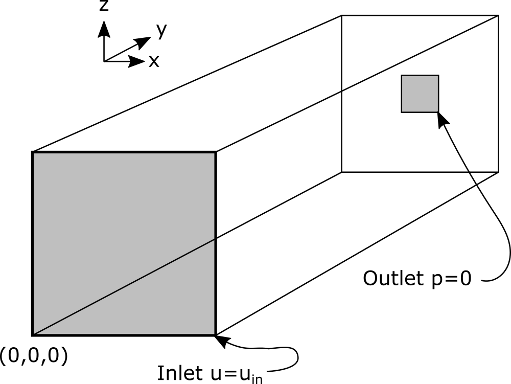
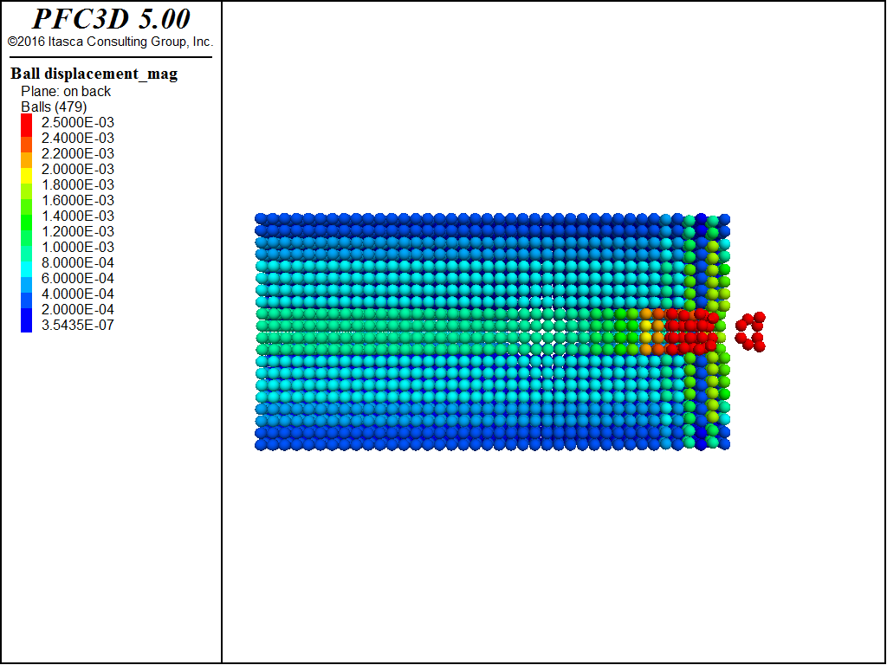
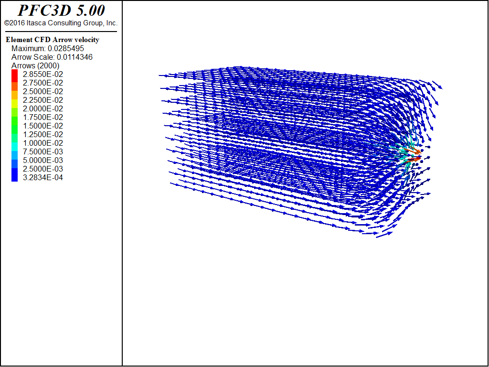
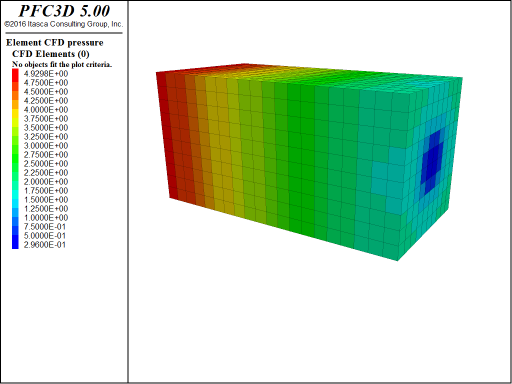

采用达西定律模拟多孔介质中的流动
本算例演示如何利用 Python 脚本功能与 PFC CFD 模块，对 颗粒材料中的低雷诺数多孔流动进行建模。
问题描述


图 1：问题几何示意图。
颗粒材料装在一个长方体盒子中，盒子尺寸为 10 cm × 20 cm × 10 cm。水在 y=0 处垂直于 x-z 平面流入盒子，流量为 1e-5 m3/s。除入口以及盒子 y = 0.2 平面上的一个 2 cm × 2 cm 出口（该处压力保持恒定）之外， 盒子各壁面均不透水。组成颗粒材料的颗粒 平均半径为 2.5e-3 m，密度为 2600 kg/m3。不施加任何重力。流动 在向出口表面汇聚时加速。颗粒被推移 穿过出口表面。
理论
多孔介质中的低雷诺数流体流动由达西定律描述：
式中，\(\vec{v}\) 为流体速度，\(K\) 为基质 渗透率，\(\mu\) 为流体黏度，\(\epsilon\) 为 基质孔隙率，\(p\) 为流体压力。通常 假定流体的压缩性足够小，可以忽略， 由此得到不可压缩条件，
通常在以下情况下采用该假定： (i) 流体速度与流体声速相比很小； 或 (ii) 系统中从最高压力到最低压力的预期体积变化很小。 稳态不可压缩多孔流动方程由 (1) 出发、 对等式两边取散度， 即可推导得到，
代入 (2) 可得，
该泊松方程需满足以下边界 条件：在入流面上 \(\vec{\nabla} p= -\vec{v}_{in}\frac{\mu\epsilon}{K}\)，其中 \(\vec{u}_{in}\) 为指定的入口速度； 在出流面上 \(p=0\)； 在边界的其余部分 \(\vec{v}\cdot\vec{n}=0\)（其中 \(\vec{n}\) 为边界的法向方向）。该 方程可用隐式方法快速求解，以得到 流体压力场。只需一次矩阵求逆。该 解为稳态解，入流量等于出流量。 一旦压力已知，流体速度即可由 (1) 导出。
流体流动方程（(1) 和 (2)）在一套 粗网格单元上求解。流体速度在单元上 呈分段线性。这套单元（流体网格）用于通过计算 PFC3D 颗粒与流体单元之间的重叠来确定孔隙率。 为计入颗粒对流体流动的影响，需根据 PFC3D 模型的孔隙率计算渗透率。 采用 Kozeny-Carman 关系式估算 渗透率。
式中，\(r_e\) 为 PFC 颗粒的半径， \(\epsilon_{min}\) 为系统中的最小孔隙率 （取为 30%）。为计算渗透率， 孔隙率上限取为 70%。当孔隙率超过 70% 时， 渗透率取为固定值。
CFD 模块自动将流体-颗粒相互作用力 施加到 PFC 颗粒上。双向耦合通过 更新流体流动模型中的孔隙率和渗透率信息， 并通过更新 PFC CFD 模块中的流体速度场来实现。 在 PFC 中采用 100 个力学循环的短求解区间， 其间通过新的孔隙率和渗透率信息，重新计算 新的稳态流体流动场。 在 PFC 中的求解区间期间，速度场被视为常数。
实现
Python 文件程序 darcy.py 实现了该耦合问题。
import numpy as np
import pylab as plt
import fipy as fp
import itasca as it
from itasca import ballarray as ba
from itasca import cfdarray as ca
from itasca import element
from functools import reduce
class DarcyFlowSolution(object):
def __init__(self):
self.mesh = fp.Grid3D(nx=10, ny=20, nz=10,
dx=0.01, dy=0.01, dz=0.01)
self.pressure = fp.CellVariable(mesh=self.mesh, \
name='pressure', value=0.0)
self.mobility = fp.CellVariable(mesh=self.mesh, \
name='mobility', value=0.0)
self.pressure.equation = (fp.DiffusionTerm(coeff=self.mobility) == 0.0)
self.mu = 1e-3 # 动力黏度
self.inlet_mask = None
self.outlet_mask = None
# 在 PFC CFD 模块中创建 FiPy 网格
ca.create_mesh(self.mesh.vertexCoords.T,
self.mesh._cellVertexIDs.T[:,(0,2,3,1,4,6,7,5)].astype(np.int64))
if it.ball.count() == 0:
self.grain_size = 5e-4
else:
self.grain_size = 2*ba.radius().mean()
it.command("""
model configure cfd
element cfd attribute density 1e3
element cfd attribute viscosity {}
cfd porosity polyhedron
cfd interval 20
""".format(self.mu))
def set_pressure(self, value, where):
"""Dirichlet boundary condition. value is a pressure in Pa and where
is a mask on the element faces."""
print ("setting pressure to {} on {} faces".format(value, where.sum()))
self.pressure.constrain(value, where)
def set_inflow_rate(self, flow_rate):
"""
Set inflow rate in m^3/s. Flow is in the positive y direction
and is specfified on the mesh faces given by the inlet_mask.
"""
assert self.inlet_mask.sum()
assert self.outlet_mask.sum()
print ("setting inflow on %i faces" % (self.inlet_mask.sum()))
print ("setting outflow on %i faces" % (self.outlet_mask.sum()))
self.flow_rate = flow_rate
self.inlet_area = (self.mesh.scaledFaceAreas*self.inlet_mask).sum()
self.outlet_area = (self.mesh.scaledFaceAreas*self.outlet_mask).sum()
self.Uin = flow_rate/self.inlet_area
inlet_mobility = (self.mobility.faceValue * \
self.inlet_mask).sum()/(self.inlet_mask.sum()+0.0)
self.pressure.faceGrad.constrain(
((0,),(-self.Uin/inlet_mobility,),(0,),), self.inlet_mask)
def solve(self):
"""Solve the pressure equation and find the velocities."""
self.pressure.equation.solve(var=self.pressure)
# 求解完成后将数值写入 CFD 单元
ca.set_pressure(self.pressure.value)
ca.set_pressure_gradient(self.pressure.grad.value.T)
self.construct_cell_centered_velocity()
def read_porosity(self):
"""Read the porosity from the PFC cfd elements and calculate a
permeability."""
porosity_limit = 0.7
B = 1.0/180.0
phi = ca.porosity()
phi[phi>porosity_limit] = porosity_limit
K = B*phi**3*self.grain_size**2/(1-phi)**2
self.mobility.setValue(K/self.mu)
ca.set_extra(1,self.mobility.value.T)
def test_inflow_outflow(self):
"""Test continuity."""
a = self.mobility.faceValue*np.array([np.dot(a,b) for a,b in
zip(self.mesh.faceNormals.T,
self.pressure.faceGrad.value.T)])
self.inflow = (self.inlet_mask * a * self.mesh.scaledFaceAreas).sum()
self.outflow = (self.outlet_mask * a * self.mesh.scaledFaceAreas).sum()
print ("Inflow: {} outflow: {} tolerance: {}".format(
self.inflow, self.outflow, self.inflow + self.outflow))
assert abs(self.inflow + self.outflow) < 1e-6
def construct_cell_centered_velocity(self):
"""The FiPy solver finds the velocity (fluxes) on the element faces,
to calculate a drag force PFC needs an estimate of the
velocity at the element centroids. """
assert not self.mesh.cellFaceIDs.mask
efaces = self.mesh.cellFaceIDs.data.T
fvel = -(self.mesh.faceNormals*\
self.mobility.faceValue.value*np.array([np.dot(a,b) \
for a,b in zip(self.mesh.faceNormals.T, \
self.pressure.faceGrad.value.T)])).T
def max_mag(a,b):
if abs(a) > abs(b): return a
else: return b
for i, el in enumerate(element.cfd.list()):
xmax, ymax, zmax = fvel[efaces[i][0]][0], fvel[efaces[i][0]][1],\
fvel[efaces[i][0]][2]
for face in efaces[i]:
xv,yv,zv = fvel[face]
xmax = max_mag(xv, xmax)
ymax = max_mag(yv, ymax)
zmax = max_mag(zv, zmax)
el.set_vel((xmax, ymax, zmax))
if __name__ == '__main__':
it.command("program call 'particles.dat'")
solver = DarcyFlowSolution()
fx,fy,fz = solver.mesh.faceCenters
# 设置边界条件
solver.inlet_mask = fy == 0
solver.outlet_mask = reduce(np.logical_and,
(fy==0.2, fx<0.06, fx>0.04, fz>0.04, fz<0.06))
solver.set_inflow_rate(1e-5)
solver.set_pressure(0.0, solver.outlet_mask)
solver.read_porosity()
solver.solve()
solver.test_inflow_outflow()
it.command("cfd update")
flow_solve_interval = 100
def update_flow(*args):
if it.cycle() % flow_solve_interval == 0:
solver.read_porosity()
solver.solve()
solver.test_inflow_outflow()
it.set_callback("update_flow",1)
it.command("""
model large-strain on
model cycle 20000
model save 'end'
""")
类 DarcyFlowSolution 使用有限体积 Python（FiPy）
程序包来求解流体流动方程 [Guyer2009]。FiPy 是内嵌在 PFC 中的
Python 环境的一部分。
文件 particles.p3dat 创建 PFC 颗粒和墙。
python-reset-state false
model new
model domain extent -0.01 0.11 -0.01 0.21 -0.01 0.11 condition destroy
contact cmat default model linear property kn 1e4 dp_nratio 0.2
fish define inline
global dim = 1e-1
global radius = dim / 10 / 4
global xdim = dim - radius
global ydim = 2 * dim - radius
end
[inline]
ball generate cubic box [radius] [xdim] [radius] [ydim] ...
[radius] [xdim] rad [radius]
wall generate box 0 [dim] 0 [2*dim] 0 [dim]
wall delete wall range id 6
wall generate polygon 0 0.2 0 ...
0 0.2 0.1 ...
0.04 0.2 0.1 ...
0.04 0.2 0.0
wall generate polygon 0.06 0.2 0 ...
0.06 0.2 0.1 ...
0.1 0.2 0.1 ...
0.1 0.2 0.0
wall generate polygon 0.04 0.2 0 ...
0.04 0.2 0.04 ...
0.06 0.2 0.04 ...
0.06 0.2 0.0
wall generate polygon 0.04 0.2 0.06 ...
0.04 0.2 0.1 ...
0.06 0.2 0.1 ...
0.06 0.2 0.06
ball attribute density 2600.0
program return
结果


图 2：显示位移量值的颗粒彩色等值线。


图 3：流体速度向量。


图 4：流体压力场。
| [Guyer2009] | J.E. Guyer、D. Wheeler 和 J. A. Warren，“FiPy：用 Python 求解偏微分方程”（FiPy: Partial Differential Equations with Python），载于 Computing in Science & Engineering，11(3)，第 6-15 页（2009），doi:10.1109/MCSE.2009.52，http://www.ctcms.nist.gov/fipy |
| 这些内容对您有帮助吗？… | FLAC3D © 2019, Itasca | 原文更新于 2020 年 10 月 8 日 |